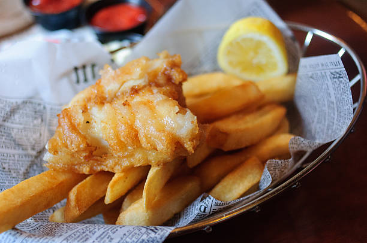

Fish and chips

Description
Fish and chips, a classic British staple, enjoyed no matter what the weather, often accompnied with a pint of fine ale.
This dish is often replicated in countries outside of the UK but genrally never replicated to the high standard demanded by the usual chip shop patron!
Ingredients
- Potatoes
- Cod
- Batter
- Peas
- Salt and Vinegar
Steps
- Chop your spuds into chips and place into fryer
- Batter your Cod and chuck in the fryer or grill
- Boil your peas then smaush them with a fork
- Add all to plate
- Drown in salt and Vinegar, Enjoy!
Return home